연구실안전관리사 (2025-07-12 기출문제)
1과목: 안전관리 법령
1. 「연구실 안전환경 조성에 관한 법령」에서 규정하는 교육에 관한 설명으로 옳지 않은 것은?
- 연구활동종사자(근로자)의 신규교육 : 채용 후 6개월 이내
- 연구활동종사자(대학생)의 신규교육 : 연구활동 참여 후 3개월 이내
- 저위험연구실 연구활동종사자의 정기교육 : 연간 2시간 이상
- 정밀안전진단 대상 연구실 연구활동 종사자의 정기교육 : 반기별 6시간 이상
(정답률: 알수없음)
2. 「연구실 안전점검 및 정밀안전진단에 관한 지침」에서 규정하는 연구실 안전등급에 관한 설명으로 옳지 않은 것은?
- 연구실 안전등급은 총 5등급으로 구분한다.
- 1등급은 “연구실 안전환경에 문제가 없고 안전성이 유지된 상태”이다.
- 3등급은 “연구실 안전환경 또는 연구시설에 결함이 심하게 발생하여 사용에 제한을 가하여야 하는 상태”이다.
- 안전등급 평가결과 4등급 연구실의 경우에는 사용제한·금지 또는 철거 등의 안전조치를 이행하고 과학기술정보통신부장관에게 즉시 보고하여야 한다.
(정답률: 알수없음)
3. ＜보기＞는 「연구실 안전환경 조성에 관한 법령」에서 규정하는 교육·훈련에 관한 설명이다. ( ) 안에 들어갈 숫자로 옳은 것은?
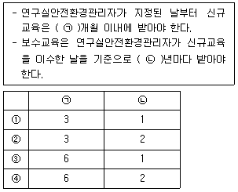
- ①
- ②
- ③
- ④
(정답률: 알수없음)
4. 「연구실 안전환경 조성에 관한 법률」에서 규정하는 안전관리 우수연구실 인증제에 관한 설명으로 옳지 않은 것은?
- 안전관리 우수연구실 인증의 유효기간은 신청한 날부터 2년으로 한다.
- 안전관리 우수연구실 인증은 인증심의위원회의 심의를 거쳐 결정한다.
- 안전관리 우수연구실 인증 신청에 필요한 서류에는 연구실 배치도, 연구활동종사자현황 등이 포함된다.
- 안전관리 우수연구실 인증의 유효기간이 지나기 전에 다시 인증을 받으려는 경우에는 유효기간 만료일 60일 전까지 인증을 신청해야 한다.
(정답률: 알수없음)
5. 「연구실 안전환경 조성에 관한 법률」에서 규정하는 안전관리 우수연구실 인증제의 취소 사유가 아닌 것은?
- 인증서를 반납하는 경우
- 연구실사고가 발생한 경우
- 거짓이나 그 밖의 부정한 방법으로 인증을 받은 경우
- 정당한 사유 없이 1년 이상 연구활동을 수행하지 않은 경우
(정답률: 알수없음)
6. ＜보기＞는 「연구실 안전환경 조성에 관한 법령」에서 규정하는 용어 정의이다. ( ) 안에 들어갈 말로 옳은 것은?
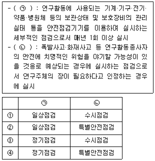
- ①
- ②
- ③
- ④
(정답률: 알수없음)
7. 「연구실사고에 대한 보상기준」에서 규정하는 보험급여에 관한 설명으로 옳은 것은?
- 장의비는 유족급여와 별개로 지급한다.
- 유족급여는 1인당 1억원 이상을 지급한다.
- 입원급여는 요양급여와 별개로 지급하지 않는다.
- 요양급여의 최고 한도를 설정할 때에는 10억원 이상으로 한다.
(정답률: 알수없음)
8. 「연구실 안전환경 조성에 관한 법률」에서 규정하는 정밀안전진단에 관한 설명으로 옳지 않은 것은?
- 연구주체의 장은 정밀안전진단을 실시한 경우 그 결과를 지체 없이 공표하여야 한다.
- 연구주체의 장은 중대연구실사고가 발생한 경우 정밀안전진단지침에 따라 정밀안전진단을 실시하여야 한다.
- 연구주체의 장은 유해인자를 취급하는 등 위험한 작업을 수행하는 연구실에 대하여 정기적으로 정밀안전진단을 실시하여야 한다.
- 연구주체의 장은 정밀안전진단을 실시한 결과 연구실에 유해인자가 누출되는 등 대통령령으로 정하는 중대한 결함이 있는 경우에는 그 결함이 있음을 안 날부터 10일 이내에 과학기술정보통신부장관에게 보고하여야 한다.
(정답률: 알수없음)
9. 다음은 「연구실 설치운영에 관한 기준」에서 규정하는 중위험연구실의 설치 준수사항 중 일부이다. ( ) 안에 들어갈 말로 옳은 것은?
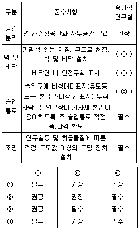
- ①
- ②
- ③
- ④
(정답률: 알수없음)
10. 「연구실 안전환경 조성에 관한 법률 시행령」에서 규정하는 정밀안전진단의 실시 주기로 옳은 것은?
- 1년마다 1회 이상
- 1년마다 2회 이상
- 2년마다 1회 이상
- 3년마다 1회 이상
(정답률: 알수없음)
11. 「연구실 안전환경 조성에 관한 법률」에서 규정하는 연구주체의 장의 의무가 아닌 것은?
- 연구실사고로 인하여 발생한 연구활동종사자의 피해를 구제하기 위하여 노력하여야 한다.
- 연구실 안전관리 업무를 효율적으로 수행하기 위하여 연구실안전관리담당자를 지정하여야 한다.
- 연구과제 수행을 위한 연구비를 책정할 때 일정 비율 이상을 연구실 안전 관련 예산에 배정하여야 한다.
- 연구실 안전에 관한 유지·관리 및 연구실 사고 예방을 철저히 함으로써 연구실의 안전환경을 확보할 책임을 지며, 연구실사고 예방시책에 적극 협조하여야 한다.
(정답률: 알수없음)
12. 「연구실 안전환경 조성에 관한 법령」에서 규정하는 연구실안전관리사의 자격 정지 및 취소에 관한 설명으로 옳은 것은?
- 자격증을 다른 사람에게 빌려주는 경우 과학기술정보통신부장관은 그 자격을 취소하여야 한다.
- 거짓으로 연구실안전관리사 자격을 취득한 경우에는 과학기술정보통신부장관은 그 자격을 정지하여야 한다.
- 직무상 알게 된 비밀을 제3자에게 제공한 경우 과학기술정보통신부장관은 3년의 범위에서 그 자격을 정지할 수 있다.
- 연구실안전관리사의 자격이 정지된 상태에서 연구실안전관리사 업무를 수행한 경우 과학기술정보통신부장관은 그 자격을 취소하여야 한다.
(정답률: 알수없음)
13. ＜보기＞는 「연구실 안전환경 조성에 관한 법령」에서 규정하는 연구실안전환경관리자의 지정에 관한 설명이다. ( ) 안에 들어갈 말로 옳은 것은?
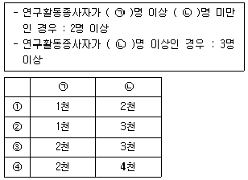
- ①
- ②
- ③
- ④
(정답률: 알수없음)
14. 「연구실 안전환경 조성에 관한 법령」에 따라 ( ) 안에 공통으로 들어갈 말로 옳은 것은?
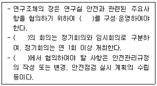
- 연구실안전환경위원회
- 연구실안전정책위원회
- 연구실안전심의위원회
- 연구실안전관리위원회
(정답률: 알수없음)
15. 「연구실 안전환경 조성에 관한 법률」에서 규정하는 연구활동종사자 또는 공중의 안전을 위한 긴급한 조치에 관한 설명으로 옳지 않은 것은?
- 연구주체의 장은 긴급한 조치를 한 경우 그 사실을 과학기술정보통신부장관에게 1개월 이내에 보고하여야 한다.
- 연구주체의 장은 긴급한 조치를 위한 연구활동종사자에 대하여 그 조치의 결과를 이유로 신분상 또는 경제상의 불이익을 주어서는 안 된다.
- 연구주체의 장은 긴급한 조치가 필요하다고 판단되는 경우 연구실의 사용금지나 철거 등 법률에 정해진 조치 중 하나 이상을 취하여야 한다.
- 연구활동종사자는 연구실의 안전에 중대한 문제가 발생하여 긴급한 조치가 필요하다고 판단되는 경우에는 연구실 일부의 사용제한 등의 조치를 직접 취할 수 있다.
(정답률: 알수없음)
16. 「연구실 안전환경 조성에 관한 법률」에서 규정하는 연구실안전관리사의 결격사유가 아닌 것은?
- 미성년자
- 피성년후견인
- 피한정후견인
- 금고 이상의 형의 집행유예를 선고받고 그 유예기간 중에 있는 사람
(정답률: 알수없음)
17. 「연구실 사고조사반 구성 및 운영규정」에서 규정하는 사고조사반의 구성 및 운영에 관한 설명으로 옳지 않은 것은?
- 사고조사반의 임기는 3년으로 하며, 연임할 수 있다.
- 사고조사반의 책임자는 과학기술정보통신부장관이 지명하거나 위촉한다.
- 사고조사반은 연구실사고에 대한 사고조사를 실시하는 경우 그 권한을 표시하는 사고조사반원증을 관계인에게 제시하여야 한다.
- 사고조사반원은 사고조사 과정에서 업무상 알게 된 정보를 외부에 제공하고자 하는 경우 사전에 과학기술정보통신부장관과 협의하여야 한다.
(정답률: 알수없음)
18. 「연구실안전심의위원회 운영규정」에서 규정하는 연구실안전심의위원회의 구성에 관한 설명으로 옳지 않은 것은?
- 연구실안전심의위원회의 위원장은 과학기술정보통신부장관이 된다.
- 연구실안전심의위원회의 민간위원 임기는 3년으로 하며, 한 차례만 연임할 수 있다.
- 연구실안전심의위원회는 위원장을 포함한 당연직 위원 5명과 과학기술정보통신부장관이 위촉하는 민간위원 10명 이내로 구성한다.
- 연구실안전심의위원회의 민간위원은 연구실 안전 분야의 대학 부교수급 또는 연구기관책임연구원급 이상으로 이분야에 학식과 경험이 풍부한 사람 중에서 산업계·학계·연구계 및 성별을 고려하여 위촉한다.
(정답률: 알수없음)
19. ＜보기＞는 「연구실 안전환경 조성에 관한 법령」에서 규정하는 중대연구실사고에 관한 설명이다. ( ) 안에 들어갈 숫자로 옳은 것은?
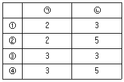
- ①
- ②
- ③
- ④
(정답률: 알수없음)
20. ＜보기＞는 「연구실 안전환경 조성에 관한 법률」에서 규정하는 용어에 관한 설명이다. ( ) 안에 공통으로 들어갈 말로 옳은 것은?
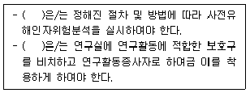
- 연구실책임자
- 연구주체의 장
- 연구실안전관리담당자
- 연구실안전환경관리자
(정답률: 알수없음)
2과목: 안전관리이론 및 체계
21. ＜보기＞의 사례에서 연구실사고의 기인물로 옳은 것은?
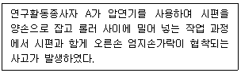
- 압연기
- 시편
- 손
- 롤러
(정답률: 알수없음)
22. 실험 중 유기용제 톨루엔이 들어 있던 용기가 파열되면서 화재가 발생하였을 때, 연구실사고 대응방법으로 옳지 않은 것은?
- 위험성이 높지 않다고 판단되면, 초기 진화를 실시한다.
- 흡착제, 흡착포, 중화제 등을 사용하여 사고처리를 실시한다.
- 유해가스 또는 연소생성물의 흡입 방지를 위한 개인보호구를 착용한다.
- 유해물질에 노출된 부상자의 노출된 부위를 깨끗한 물로 씻어낸다.
(정답률: 알수없음)
23. <그림>은 버드의 재해 발생 비율을 나타낸 것이다. '가 : 나 : 다 : 라'의 비율로 옳은 것은?
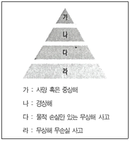
- 1 : 10 : 20 : 200
- 1 : 10 : 30 : 300
- 1 : 10 : 30 : 600
- 1 : 29 : 300 : 600
(정답률: 알수없음)
24. 버드의 사고연쇄반응 이론과 하인리히의 도미노 이론에 관한 설명으로 옳지 않은 것은?
- 버드의 이론에서 1단계는 계획, 통제기능상 관리의 부족 등을 포함한다.
- 하인리히의 이론에서 사회적 환경 및 유전적 요소는 2단계에 해당한다.
- 두 이론은 사고의 각 단계가 연쇄적으로 영향을 주어 연구실사고가 발생한다고 본다.
- 버드의 이론은 하인리히의 이론과 유사하나 사고 원인적인 관점에서 차이가 있는 이론이다.
(정답률: 알수없음)
25. <그림>에 해당하는 사고요인의 관계에 따른 분류로 옳은 것은?
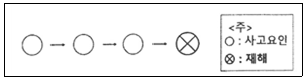
- 단순자극형
- 집중형
- 단순연쇄형
- 복합형
(정답률: 알수없음)
26. ＜보기＞의 사례에 해당하는 안전교육 효과를 평가하기 위한 방법으로 옳은 것은?
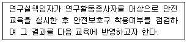
- 시험법
- 관찰법
- 사례법
- 질문법
(정답률: 알수없음)
27. 파커(Parker) 등이 제안한 안전문화의 5단계 성숙모델 중 3단계(Claculative)에 해당하는 것은?
- 안전과 관련된 법령과 규제 회피에 대하여 고민한다.
- 위험부석을 중요시하며, 안전관리시스템이 사고예방에 효과가 있다고 본다.
- 비공식적인 보고 시스템이 있으며, 연구실사고조사는 즉각적인 원인에 초점을 맞추고 조사한다.
- 연구실책임자가 스스로 안전에 관한 편견을 갖고 있다는 사실을 깨닫고, 안전과 관련된 내부감사를 긍정적으로 받아들인다.
(정답률: 알수없음)
28. 연구실 안전교육의 일반적인 진행 단계를 순서대로 나열한 것은?
- 도입→확인/총괄→제시/설명→적용/응용
- 도입→제시/설명→확인/총괄→적용/응용
- 도입→적용/응용→제시/설명→확인/총괄
- 도입→제시/설명→적용/응용→확인/총괄
(정답률: 알수없음)
29. ( ) 안에 들어갈 말로 옳은 것은?
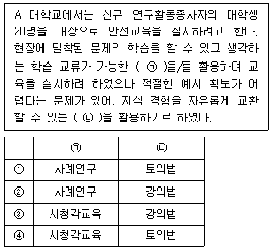
- ①
- ②
- ③
- ④
(정답률: 알수없음)
30. 「연구실 안전환경 조성에 관한 법령」에서 규정하는 연구활동종사자에 관한 특별안전 교육·훈련의 내용으로 옳은 것을 ＜보기＞에서 모두 고른 것은?
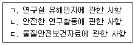
- ㄱ, ㄴ
- ㄱ, ㄷ
- ㄴ, ㄷ
- ㄱ, ㄴ, ㄷ
(정답률: 알수없음)
31. <그림>은 연구실사고의 발생과정이다. ( ) 안에 들어갈 말로 옳은 것은?
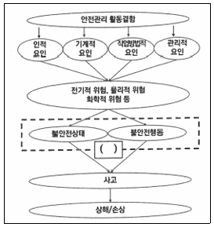
- 근본요인
- 직접원인
- 배후요인
- 간접원인
(정답률: 알수없음)
32. 행동기반안전(BBS, Behavior-Based Safety) 관리에 관한 설명으로 옳지 않은 것은?
- 결과와 아울러 과정을 강조한다.
- 관찰을 통해 행동 객관화를 한다.
- 안전행동 증가보다 불안전한 행동 감소에 초점을 둔다.
- 연구실책임자와 연구활동종사자가 모두 참여하여 프로그램을 설계한다.
(정답률: 알수없음)
33. ＜보기＞의 예시에 해당하는 연구개발활동안전분석보고서의 항목으로 옳은 것은?
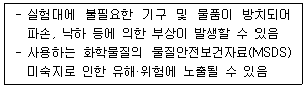
- 안전계획
- 연구·실험절차
- 비상조치계획
- 위험분석
(정답률: 알수없음)
34. 연구실 안전관리시스템의 PDCA에 관한 설명으로 옳은 것은?
- P(Plan) : 연구실 안전환경 목표 및 추진계획을 수립하고, 성과의 달성 여부를 점검하는 단계
- D(Do) : 연구주체의 장의 검토사항을 반영하고 문서화하여 안전관리시스템을 체계적으로 개선하는 단계
- C(Check) : 성과측정 및 모니터링, 시정 및 예방조치 등을 하는 단계
- A(Action) : 시스템 운영 상황에 대한 내부심사를 실시하여 부적합 사항 등을 찾아내는 단계
(정답률: 알수없음)
35. ＜보기＞의 연구실사고 조사 절차를 순서대로 나열한 것은?
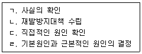
- ㄱ→ㄷ→ㄹ→ㄴ
- ㄱ→ㄹ→ㄷ→ㄴ
- ㄷ→ㄱ→ㄹ→ㄴ
- ㄷ→ㄹ→ㄱ→ㄴ
(정답률: 알수없음)
36. 소속 집단에서 주변 구성원들의 인적 요인과 인간관계를 포함하는 상호작용 요소로 옳은 것은?
- Hardware
- Software
- Enviroment
- Liveware
(정답률: 알수없음)
37. ＜보기＞의 사례에 해당하는 불안전한 행동의 심리적 생리적 원인으로 가장 적절한 것은?
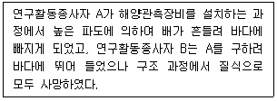
- 장면행동
- 주연행동
- 규칙착오
- 지름길 반응
(정답률: 알수없음)
38. ( ) 안에 들어갈 말로 옳은 것은?
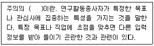
- 중단성
- 방향성
- 변동성
- 단속성
(정답률: 알수없음)
39. ＜보기＞의 사례에 해당하는 불안전한 행동의 원인으로 가장 적절한 것은?
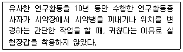
- 지식 부족
- 기능 미숙
- 태도 불량
- 작위 에러
(정답률: 알수없음)
40. ＜보기＞의 사례에 해당하는 안전심리이론으로 가장 적절한 것은?
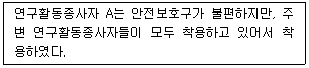
- 집단사고
- 동조현상
- 플라시보 효과
- 거울자아 이론
(정답률: 알수없음)
3과목: 화학ㆍ가스 안전관리
41. 안전밸브 점검 및 검사 주기에 관한 설명으로 옳지 않은 것은?
- 안전밸브 전단에 파열판이 설치된 경우 3년 마다 1회 이상 실시한다.
- 압축기의 최종단에 안전밸브가 설치된 경우 1년마다 1회 이상 실시한다.
- 공정안전보고서 이행상태 평가결과 우수사업장에서는 4년마다 1회 이상 실시한다.
- 화학공정 유체와 안전밸브의 디스크가 직접 접촉되는 경우 3년마다 1회 이상 실시한다.
(정답률: 알수없음)
42. 「산업안전보건기준에 관한 규칙」에서 안전밸브 등의 전·후단에 자물쇠형 또는 이에 준하는 형식의 차단밸브를 설치할 수 있는 경우가 아닌 것은?
- 예비용 설비를 설치하고 각각의 설비에 안전밸브 등이 설치되어 있는 경우
- 화학설비 및 그 부속설비에 안전밸브 등이 복수방식으로 설치되어 있는 경우
- 열팽창에 의하여 상승된 압력을 낮추기 위한 목적으로 안전밸브가 설치된 경우
- 인접한 화학설비 및 그 부속설비에 안전밸브 등이 각각 설치되어 있고, 해당 화학설비 및 그 부속설비의 연결 배관에 차단밸브가 설치된 경우
(정답률: 알수없음)
43. 「산업안전보건기준에 관한 규칙」에서 규정하는 파열판 설치 기준이 아닌 것은?
- 반응폭주 등 급격한 압력 상승의 우려가 있는 경우
- 급성 독성물질 누출로 인하여 주위 작업환경을 오염시킬 우려가 있는 경우
- 운전 중 안전밸브에 이상 물질이 누적되어 안전밸브가 작동되지 않을 우려가 있는 경우
- 압력용기의 안지름이 100mm 이하인 경우
(정답률: 알수없음)
44. 화염방지기(Flame Arrester)에 관한 설명으로 옳지 않은 것은?
- 가능한 한 보호 대상 화학설비의 통기관 끝단에 화염방지기를 설치한다.
- 배관이 길어 화염방지기의 성능 저하가 우려될 경우, 폭연방지기를 설치해야 한다.
- 인화점이 100℃ 이하인 물질을 인화점보다 높은 온도에서 저장하는 경우, 화염방지기를 설치해야 한다.
- 통기밸브가 통기관에 포함된 경우에는, 화학설비와 통기밸브 사이에 화염방지기를 설치한다.
(정답률: 알수없음)
45. 가스누출감지경보기에 관한 설명으로 옳지 않은 것은?
- 독성가스의 경보설정 값은 ERPG-2값을 가장 우선으로 선정한다.
- 가연성가스의 경우 폭발하한계의 25% 이하에서 경보가 울리도록 설정하여야 한다.
- 암모니아를 제외한 독성가스의 지시계 눈금의 범위는 0에서 허용농도의 3배 값이어야 한다.
- 경보를 발신한 후에는 가스농도가 변화하여도 계속 경보를 울려야 하며, 그 확인 또는 대책을 조치할 때에는 경보가 정지되어야 한다.
(정답률: 알수없음)
46. 연구실사고 상황별 대처요령으로 옳은 것은?
- 산성물질 노출 시 가성소다를 이용하여 중화 처리한다.
- 수은온도계가 파손되었을 때 진공청소기를 이용하여 제거한다.
- 독극물을 섭취하여 의식불명인 경우 구강 대 구강 인공호흡을 실시한다.
- 액화천연가스(LNG) 누출 시 바닥면에 체류할 수 있으므로 빗자루 등으로 쓸어낸다.
(정답률: 알수없음)
47. 연구실에서 발생할 수 있는 가스 사고의 위험성 및 특성에 관한 설명으로 옳은 것은?
- 가연성가스의 위험성은 불활성가스 첨가 시 증가한다.
- 모든 고압가스는 지면을 타고 확산되는 특징이 있다.
- 폭발상한계와 폭발하한계는 모두 온도와 압력의 영향을 받지 않는다.
- 수소가스 누출 시 정전기가 점화원이 될 수 있고, 불꽃이 보이지 않게 때문에 불꽃감지기를 사용하여 확인하여야 한다.
(정답률: 알수없음)
48. 연구실 화학물질 누출사고의 특성으로 옳지 않은 것은?
- 중독, 화상, 환경오염 등을 수반할 수 있다.
- 증기 비중이 1보다 큰 물질은 지면을 따라 확산되므로 주의한다.
- 가스상 물질은 액상으로 취급되는 경우에도 쉽게 확산될 수 있다.
- 화학물질 누출사고 시 독성에 의한 영향은 크고, 폭발 및 화재사고의 위험을 적다.
(정답률: 알수없음)
49. 연구실에서 ＜보기＞의 화학물질을 폐기할 때 필요한 폐액 용기의 최소 개수는?
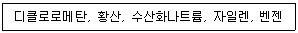
- 2개
- 3개
- 4개
- 5개
(정답률: 알수없음)
50. 연구실 폐기물 배출 시 조치방법에 관한 설명으로 옳지 않은 것은?
- 적린은 건조한 후 분별배출한다.
- 금속마그네슘은 기름(중질유 등) 함침의 방법으로 조치한다.
- 에탄올은 분별배출하고 냉장차 등으로 저온 수송한다.
- 아세톤은 탱크로리에 질소가스를 충전하여 밀봉하고 정전기 방지 등의 조치를 취하여 배출한다.
(정답률: 알수없음)
51. ＜보기＞에서 폐기물 처리 시 혼합하면 사고 위험이 있는 조합의 개수는?
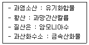
- 1개
- 2개
- 3개
- 4개
(정답률: 알수없음)
52. 연구활동종사자들의 건강을 보호하고 직업병을 예방하기 위하여 화학적 유해인자에 관한 노출기준을 제시하고 있다. 이 중 1일 작업시간 동안 잠시라도 노출되어서는 안 되는 기준은?
- BEIs(Biological Exposure Indices)
- AFGL-1(Acute Exposure Guideline Level)
- TLV-C(Threshold Limit Value – Ceiling)
- ERPG-2(Emergency Response Planning Guideline)
(정답률: 알수없음)
53. 지정폐기물 보관에 관한 설명으로 옳지 않은 것은?
- 폐유독물질 보관시설에는 환기설비 또는 공조설비 등을 설치하지 않는다.
- 지정폐기물 중 폐산·폐알칼리는 보관을 시작한 날부터 45일 초과하여 보관할 수 없다.
- 폐유기용제는 휘발되지 아니하도록 밀폐된 용기에 보관하여야 한다.
- 지정폐기물의 보관 장소에는 보관 중인 지정폐기물의 종류, 보관 가능 용량 등이 기록된 표지판을 설치하여야 한다.
(정답률: 알수없음)
54. 연구실에서 발생하는 폐기물의 관리에 관한 설명으로 옳지 않은 것은?
- 폐기물은 수집 과정에서 흩날리거나 누출되지 않도록 한다.
- 지정폐기물은 지정폐기물 외에 폐기물과 함께 보관할 수 있다.
- 폐기물은 보관 과정에서 침출수가 유출되지 않도록 한다.
- 폐기물은 가연성 여부에 따라 구분하여 운반하여야 한다.
(정답률: 알수없음)
55. ＜보기＞에서 옳은 설명을 모두 고른 것은?
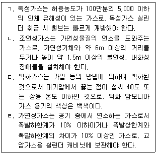
- ㄱ, ㄴ
- ㄱ, ㄹ
- ㄴ, ㄷ
- ㄷ, ㄹ
(정답률: 알수없음)
56. ＜보기＞의 그림문자가 부착된 화학물질의 물리적 위험성에 관한 설명으로 옳지 않은 것은?
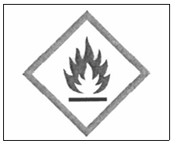
- 주위의 에너지 공급 없이 공기와 반응하여 스스로 발열하는 물질이다.
- 적은 양으로도 공기와 접촉하여 5분 안에 발화할 수 있는 액체나 고체이다.
- 일반적으로 산소를 발생하여 다른 물질을 연소시키거나 연소를 촉진시키는 물질이다.
- 물과의 상호작용에 의하여 자연발화하거나 인화성가스의 양이 위험한 수준으로 발생하는 물질이다.
(정답률: 알수없음)
57. 연구실에서 화학물질의 취급·보관·저장 시 주의사항으로 옳은 것을 ＜보기＞에서 모두 고른 것은?
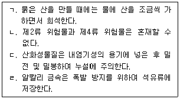
- ㄱ, ㄴ
- ㄱ, ㄹ
- ㄴ, ㄷ
- ㄷ, ㄹ
(정답률: 알수없음)
58. 연구실 내 화학물질 취급 시 주의사항으로 옳지 않은 것은?
- 긴급세척장비의 세척 용수 온도를 40℃를 초과하지 않도록 한다.
- 증류수처럼 유해성이 낮은 물질도 혼동을 방지하기 위하여 용기에 명칭을 기재하여야 한다.
- 입자 상태의 경우, 후드(포위식 포위형) 제어 풍속은 개방 상태의 개구면에서 0.4m/s 이상으로 유지해야 한다.
- 물반응성 물질 실험 시에는 반드시 글로브박스 내와 같은 불활성 분위기에서 취급할 수 있도록 하여야 한다.
(정답률: 알수없음)
59. 「고압가스 안전관리법 시행규칙」에서 규정하는 독성가스에 해당하는 것은?
- 부탄
- 아르곤
- 아세틸렌
- 산화에틸렌
(정답률: 알수없음)
60. 화학물질의 물리·화학적 특성에 관한 설명으로 옳지 않은 것은?
- 점성(Visoosity)은 유체의 흐름에 대한 저항성을 의미하며, 일반적으로 액체의 점성은 온도가 상승하면 감소한다.
- 표면장력(Surface Tension)은 액체 표면에서 발생하는 탄성력의 척도로, 분자 간 인력이 강할수록 표면장력은 강해진다.
- 끓는점(Boiling Point)은 액체의 증기압이 외부압력과 같아지는 온도를 의미하며, 외부 압력이 낮아지면 끓는점은 상승한다.
- 증기압(Vapor Pressure)은 일정한 온도에서 액체의 분자가 기체 상태로 변화하여 나타내는 압력으로, 온도가 상승할수록 증기압도 상승한다.
(정답률: 알수없음)
4과목: 가계ㆍ물리 안전관리
61. 방사선에 관한 설명으로 옳지 않은 것은?
- 이온화방사선은 세포를 손상시켜 암 유발 가능성이 높다.
- 알파선과 같이 투과력이 높은 방사선은 얇은 알루미늄판을 사용하면 안 된다.
- 방사능은 거리의 제곱에 비례해 감소하므로 거리가 멀수록 노출 강도가 저하된다.
- 방사선은 직접·간접으로 공기 또는 세포를 전리하는 능력을 가진 알파선, 베타선, 감마선, 중성자선 등을 말한다.
(정답률: 알수없음)
62. 고온장비 사용 중 화상 사고 발생 시 연구실책임자 및 연구활동종사자가 대응단계에 실시해야 할 행동으로 옳지 않은 것은?
- 고온장비의 작동을 중지한다.
- 사고 원인을 조사하고 재발방지대책을 수립한다.
- 화상부위나 물집은 건드리지 말고 2차 감염을 막기 위해 조치한다.
- 부상자를 안전이 확보된 장소를 옮기고 적절한 응급조치를 한다.
(정답률: 알수없음)
63. 사고체인(Accident Chain)의 5요소 중 <그림>에 제시된 기계의 운동에 공통적으로 발생하는 위험요소는?
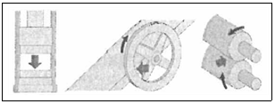
- 함정(Trap)
- 충격(Impact)
- 접촉(Contact)
- 튀어나옴(Ejection)
(정답률: 알수없음)
64. 기계·기구 설비의 방호장치 사용 및 관리에 관한 설명으로 옳지 않은 것은?
- 사용자는 방호장치 설치 이유 및 보호 범위를 숙지해야 한다.
- 설비의 유지보수 후에는 방호장치 기능을 원상복구해야 한다.
- 방호장치가 임의 제거되어 있을 시 보호구를 착용하고 사용해야 한다.
- 수리 등의 이유로 방호장치 기능 중지 시 연구실책임자의 허가를 받아야 한다.
(정답률: 알수없음)
65. 연구실 내 물리적 위험 요인의 특성 및 위험성에 관한 설명으로 옳지 않은 것은?
- 이상기압 중 고압 시 부종, 출혈, 치통 등의 위험이 있다.
- 비이온화방사선에 계속 강하게 노출되는 경우 화상, 각막염, 피부홍반 등이 발생할 위험이 있다.
- 레이저는 파장이 길고 매질 없이 에너지를 전달하며 출력이 강하고 쉽게 산란하지 않는 특성이 있다.
- 소음성 난청은 85dB(A) 이상의 소음에 장기간 노출 시 발생하나, 간혹 그보다 더 낮은 강도의 소음에 노출되어도 소음성 난청이 발생하는 경우가 존재한다.
(정답률: 알수없음)
66. 개인보호구에 관한 설명으로 옳지 않은 것은?
- 안전화는 떨어지는 물체로부터 발을 보호할 필요가 있는 경우 안창(Insole)이 부착된 제품을 착용한다.
- 보안경은 유해물질 또는 유해광선으로부터 눈을 보호하는 보호구로, 렌즈에 상처가 많은 것은 사용하지 않는다.
- 안전대는 작업자가 높은 곳에서 떨어지는 것을 방지하는 목적으로 사용하고, 튼튼한 곳에 안전고리를 체결해야 한다.
- 안전모는 높은 곳에서 떨어지는 상황에 또는 떨어지는 물체로부터 머리를 보호하는 보호구로, 턱끈을 바르게 체결하여 사용한다.
(정답률: 알수없음)
67. ( ) 안에 들어갈 말로 옳은 것은?
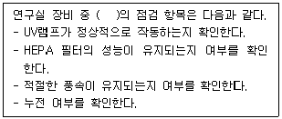
- 무균실험대
- 고압증기멸균기
- 가스크로마토그래피
- 반응성 이온 식각장비
(정답률: 알수없음)
68. 풀 프루프(Fool Proof)가 적용된 경우가 아닌 것은?
- 정전 시 승강기의 운전이 정지되는 기능
- 동력전달부의 덮개 개방 시 가동이 정지되는 기능
- 프레스의 상하 금형 사이에 신체 일부가 들어갈 때 슬라이드가 정지되는 기능
- 크레인 훅의 과상승을 방지하기 위한 권과방지 기능
(정답률: 알수없음)
69. 가스크로마토그래피의 주요 유해·위험 요인에 관한 안전대책으로 옳은 것을 ＜보기＞에서 모두 고른 것은?
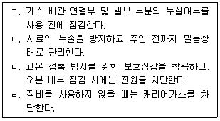
- ㄱ
- ㄴ, ㄷ
- ㄴ, ㄷ, ㄹ
- ㄱ, ㄴ, ㄷ, ㄹ
(정답률: 알수없음)
70. 망치를 사용하는 안전한 방법으로 옳지 않은 것은?
- 못의 머리와 같은 크기의 망치 머리를 사용한다.
- 외관 및 기능의 이상 여부를 점검한 후 사용한다.
- 망치의 내리치는 표면과 맞는 표면이 평행하게 한다.
- 손목을 똑바로 하고 손잡이를 손으로 감아쥔 채로 망치를 사용한다.
(정답률: 알수없음)
71. 연구실 기계·기구·장비의 용도에 관한 설명으로 옳지 않은 것은?
- 고압증기멸균기는 실험폐기물 등을 고온·고압으로 살균하는 기구로서 멸균 온도, 시간 등이 조절가능하다.
- 오븐은 시료의 열변성 실험 및 열경화 실험, 시료의 수분 제거, 초자기구의 건조 등의 용도로 사용된다.
- 초저온용기는 임계온도가 –50℃ 이하인 질소, 산소, 아르곤, 탄산 등을 액체 상태로 운반 및 저장하는 장비이다.
- 평삭기는 원판 또는 원통체의 외주면이나 단면에 있는 다수의 절삭날로 평면, 곡면 등을 절삭가공하는 기계로, 바이트가 회전하여 바이스 등에 고정된 공작물을 가공한다.
(정답률: 알수없음)
72. 기계·기구 설비의 안전화를 위하여 지켜야 할 기본원칙으로 옳지 않은 것은?
- 위험의 감소 또는 제거를 설계에 반영한다.
- 위험점 접근 방지에 대한 방호장치를 적용한다.
- 작업점 안전화를 위해 수동제어방법을 적극 채용한다.
- 기계의 설계, 제작, 사용, 폐기 등 전 주기에서 발생할 수 있는 위험에 관한 안전화 방안을 마련한다.
(정답률: 알수없음)
73. 고압증기멸균기의 점검항목이 아닌 것은?
- 내부 및 바스켓의 청결 상태
- 안전밸브 기능의 정상 작동 여부
- 콘센트 접속 및 접지 상태, 인입 케이블의 피복 상태
- 기기 내부의 수소 축적 여부 및 환기장치의 작동 상태
(정답률: 알수없음)
74. 기계의 위험점 중 절단점(Cutting Point)이 발행하는 것은?
- 나사회전부
- 벨트와 풀리
- 띠톱기계 톱날
- 교반기의 날개와 몸체
(정답률: 알수없음)
75. ＜보기＞의 경고표지가 의미하는 것은?
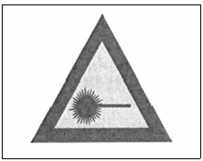
- 고온 경고표지
- 방사선 경고표지
- 레이저 경고표지
- 폭발위험 경고표지
(정답률: 알수없음)
76. 기계·기구 설비의 안전화에 관한 설명으로 옳지 않은 것은?
- 양질의 재료를 선정하거나 적절한 안전율을 반영하는 것은 구조상 안전화에 속한다.
- 방호장치를 설치하거나 자동제어 또는 원격제어 방법을 적용하는 것은 보전상 안전화에 속한다.
- 노출된 위험 부위에 가드(Guard)를 설치하거나 안전 색채를 사용하는 것은 외관상 안전화에 속한다.
- 설비의 이상 발생 시 방호장치가 작동하거나 이상 발생을 최소화하기 위해 안전회로를 적용하는 것은 기능상 안전화에 속한다.
(정답률: 알수없음)
77. 기계·기구 설비의 구조상 안전화에 관한 설명으로 옳지 않은 것은?
- 안전율 결정인자는 재료의 균질성, 계산하중의 정확도, 응력계산의 정확도 등이다.
- 안전율은 '극한강도 ÷ 최대설계응력'으로 계산할 수 있다.
- 안전여유는 '극한강도 - 허용응력'으로 계산할 수 있다.
- Cardullo의 안전율은 '소성비 × 완화율 × 여유율'로 계산할 수 있다.
(정답률: 알수없음)
78. 방호장치의 선정 시 고려사항으로 옳지 않은 것은?
- 작업성을 저해하지 않아야 한다.
- 위험을 예지할지 방지할지를 고려하여야 한다.
- 대상 기계의 성능에 적합한 것으로 선정하여야 한다.
- 가능한 한 구조가 복잡하고 방호능력의 신뢰도가 높은 것으로 선정하여야 한다.
(정답률: 알수없음)
79. 위험기계·기구별 방호장치에 관한 설명으로 옳지 않은 것은?
- 연삭기에는 덮개, 칩 비산방지장치가 있다.
- 롤러기에는 안내 롤러, 급정지장치, 울가드가 있다.
- 크레인에는 과부하방지장치, 권과방지장치, 비상정지장치, 자동전격방지장치가 있다.
- 승강기에는 출입문 인터록 장치, 과부하방지장치, 조속기, 리미트 스위치, 완충기, 비상정지장치가 있다.
(정답률: 알수없음)
80. 접근거부형 방호장치에 관한 설명으로 옳은 것은?
- 위험원이 연구활동종사자의 작업공간으로 비산되는 것을 방지하는 방식
- 신체부위가 위험한계로 들어오면 이를 감지하여 즉시 기계를 정지시키는 방식
- 위험점과 연구활동종사자를 격리시키는 방호망 또는 차단벽을 설치하는 방식
- 신체 부위가 위험한계로 접근하면 기계 구동시스템과 연동하여 신체 부위를 안전한 위치로 당기거나 밀어내는 방식
(정답률: 알수없음)
5과목: 생물 안전관리
81. 생물안전 연구시설 내 획득감염에 관한 예방조치로 옳지 않은 것은?
- 감염성물질 취급 시 적절한 개인보호구를 착용하고 실험 종료 후 반드시 손을 씻는다.
- 감염의 우려가 있는 폐기물은 생물학적 활성을 제거한 후 의료폐기물 전용용기에 폐기한다.
- 감염성물질 취급 시 실험환경 보호를 위하여 무균실험대와 같은 물리적 밀폐가 가능한 실험 장비에서 수행한다.
- 기관 내에서 감염성물질을 이동할 경우 2중 밀폐 포장하고 견고한 운반 용기에 담아 안전하게 운반한다.
(정답률: 알수없음)
82. ( ) 안에 들어갈 말로 옳은 것은?
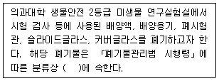
- 손상폐기물
- 병리계폐기물
- 일반의료폐기물
- 생물·화학폐기물
(정답률: 알수없음)
83. 고위험병원체 취급시설에 관한 설명으로 옳지 않은 것은?
- 생물안전 1등급 취급시설은 건강한 성인에게 감염되더라도 질병을 일으키지 않는 병원체를 다루며, 설치·운영 시 신고하여야 한다.
- 생물안전 2등급 취급시설은 감염 시 치료가 용이한 병원체를 다루며, 설치·운영 시 신고하여야 한다.
- 생물안전 3등급 취급시설은 감염 시 증세가 심각할 수 있으나 치료가 가능한 병원체를 다루며, 설치·운영 시 신고하여야 한다.
- 생물안전 4등급 취급시설은 치명적이며 치료가 어려운 질병을 유발할 수 있는 병원체를 다루며, 설치·운영 시 허가를 받아야 한다.
(정답률: 알수없음)
84. 생물안전 연구시설에서 발생하는 폐기물에 관한 설명으로 옳은 것은?
- 생물안전 연구실에서 발생하는 폐기물은 모두 의료폐기물로 분류한다.
- 혼합된 의료폐기물의 보관은 보관기간이 가장 긴 의료폐기물 종류를 기준으로 한다.
- 감염성 여부와 관계없이 모든 유전자변형생물체 폐기물은 생물학적 활성을 제거하여야 한다.
- 감염성이 없는 유전자변형생물체는 생물학적 활성을 불활성화시키면 사업장일반폐기물로 처리가 가능하다.
(정답률: 알수없음)
85. 「유전자변형생물체의 국가간 이동 등에 관한 통합고시」에서 규정하는 생물안전 2등급 연구시설의 폐기물 처리에 관한 설치·운영 기준 중 필수사항이 아닌 것은?
- 실험폐기물 처리에 대한 규정 마련
- 폐기물은 생물학적 활성을 제거하여 처리
- 고압증기멸균 또는 화약약품처리 등 생물학적 활성을 제거할 수 있는 설비 설치
- 압력기준에서 10분 이상 견딜 수 있는 폐수탱크 설치(고압증기멸균 방식 압력기준 : 최대 사용압력과 1.5배, 화약약품처리 방식 압력기준 : 수압 70kPa)
(정답률: 알수없음)
86. 생물안전 3, 4등급 고위험병원체 취급시설 설치·운영 시 변경허가 신청을 반드시 해야 하는 사유로 옳은 것은?
- 수행 연구과제 변경
- 취급 고위험병원체 종류 변경
- 고위험병원체 전담관리자 변경
- 고위험병원체 취급시설 설치·운영 책임자 변경
(정답률: 알수없음)
87. 「의료폐기물 전용용기의 구조·규격·품질·표시 및 검사방법에 관한 고시」에 따라 연구시설에서 사용하는 의료폐기물 전용용기의 필수적인 외부 표시사항이 아닌 것은?
- 배출자
- 연구시설번호
- 사용개시 연월일
- 종류 및 성질과 상태
(정답률: 알수없음)
88. 연구시설의 생물안전관리등급에 관한 설명으로 옳지 않은 것은?
- 생물안전 3등급 연구시설에서는 제2위험군 병원체를 이용한 실험이 불가능하다.
- 실험방법 등 여러 요인에 따라 병원체의 위험군과 연구시설의 생물안전관리등급은 반드시 일치하지 않을 수 있다.
- 연구시설에서 다양한 생물체를 다루는 경우 가장 높은 위해성을 가진 생물체를 기준으로 연구시설의 생물안전관리등급을 결정한다.
- 취급 생물체의 특성이나 실험조건에 의해 결정되는 위해성평가 결과에 따라 연구시설의 생물안전관리등급을 낮추거나 높일 수 있다.
(정답률: 알수없음)
89. 「유전자변형생물체의 국가간 이동 등에 관한 통합고시」에 따라 생물안전 1, 2등급 연구시설운영 시 변경신고를 해야 하는 사항을 ＜보기＞에서 모두 고른 것은?
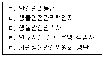
- ㄱ, ㄴ, ㄹ
- ㄱ, ㄴ, ㅁ
- ㄴ, ㄷ, ㄹ
- ㄷ, ㄹ, ㅁ
(정답률: 알수없음)
90. 생물안전 2등급 고위험병원체 취급시설을 설치·운영하고자 할 때 취해야 하는 조치로 옳은 것은?
- 질병관리청장에게 신고한다.
- 질병관리청장의 허가를 받는다.
- 과학기술정보통신부장관에게 신고한다.
- 과학기술정보통신부장관의 허가를 받는다.
(정답률: 알수없음)
91. 「유전자변형생물체의 국가간 이동 등에 관한 법률시행령」에서 규정하는 연구시설의 분류가 아닌 것은?
- 식물이용 연구시설
- 곤충이용 연구시설
- 어류이욜 연구시설
- 미생물이용 연구시설
(정답률: 알수없음)
92. ＜보기＞는 유전자변형생물체 연구시설의 설치·운영기준에 관한 사항이다. ( ) 안에 들어갈 숫자로 옳은것은?
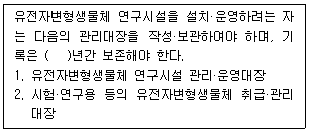
- 1
- 3
- 5
- 10
(정답률: 알수없음)
93. 제2위험군에 속하는 유전자변형생물체를 이용한 기관승인실험을 수행하고자 할 때 연구책임자가 기관생물안전위원회의 심의를 위해 제출해야 하는 서류가 아닌 것은?
- 유전자재조합실험신고서
- 유전자재조합실험승인신청서
- 연구계획서
- 위해성평가서
(정답률: 알수없음)
94. 생물안전 2등급 유전자변형생물체 연구시설을 폐쇄하고자 할 경우, 폐기물처리에 관한 내용이 포함된 폐쇄계획서 및 결과서 등을 심의하는 곳은?
- 기관생물안전위원회
- 질병관리청
- 과학기술정보통신부
- 유전자재조합실험 자문위원회
(정답률: 알수없음)
95. ＜보기＞는 「고위험병원체 취급시설 및 안전관리에 관한 고시」의 일부이다. ( ) 안에 들어갈 말로 옳은 것은?
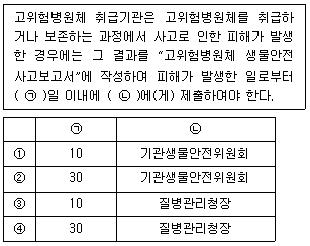
- ①
- ②
- ③
- ④
(정답률: 알수없음)
96. 유전자변형생물체의 위험군 분류를 위한 위해성 평가 시 고려해야 할 요소를 ＜보기＞에서 모두 고른 것은?
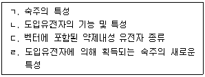
- ㄱ, ㄴ
- ㄱ, ㄷ, ㄹ
- ㄴ, ㄷ, ㄹ
- ㄱ, ㄴ, ㄷ, ㄹ
(정답률: 알수없음)
97. ( ) 안에 들어갈 말로 옳은 것은?
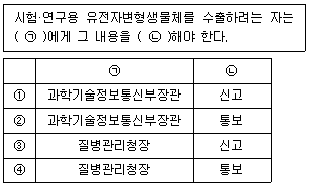
- ①
- ②
- ③
- ④
(정답률: 알수없음)
98. Class Ⅰ 생물안전작업대 사용 시 보호할 수 있는 대상을 ＜보기＞에서 모두 고른 것은?
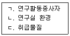
- ㄱ, ㄴ
- ㄱ, ㄷ
- ㄴ, ㄷ
- ㄱ, ㄴ, ㄷ
(정답률: 알수없음)
99. 기관생물안전위원회를 필수적으로 운영해야 하는 대상 기관을 ＜보기＞에서 모두 고른 것은?
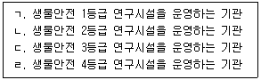
- ㄷ, ㄹ
- ㄱ, ㄴ, ㄷ
- ㄴ, ㄷ, ㄹ
- ㄱ, ㄴ, ㄷ, ㄹ
(정답률: 알수없음)
100. ( ) 안에 들어갈 말로 옳은 것은?
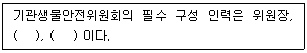
- 기관장, 생물안전관리책임자
- 생물안전관리자, 외부위원
- 생물안전관리책임자, 외부위원
- 생물안전관리책임자, 생물안전관리자
(정답률: 알수없음)
6과목: 전기ㆍ소방 안전관리
101. 방촉구조 선정 시 0종 장소에서 사용할 수 있는 방폭구조로 옳은 것은?
- 유입방폭구조
- 충전방폭구조
- 안전증방폭구조
- 본진안전방폭구조(ia기기)
(정답률: 알수없음)
102. ( ) 안에 들어갈 숫자로 옳은 것은?
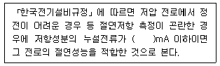
- 1
- 2
- 3
- 4
(정답률: 알수없음)
103. 특정소화대상물인 A 연구소의 4층에 적응성이 있는 피난기구가 아닌 것은?
- 구조대
- 피난교
- 미끄럼대
- 다수인피난장비
(정답률: 알수없음)
104. 가연성가스 및 분진 취급 시 필요한 최소점화에너지(MIE)에 관한 설명으로 옳지 않은 것은?
- 압력이 높을수록 MIE는 작아진다.
- 산소의 농도가 증가할 경우 MIE는 작아진다.
- 질소의 농도가 증가할 경우 MIE는 작아진다.
- 마그네슘 분진의 MIE는 이황화수소의 MIE보다 크다.
(정답률: 알수없음)
1⑤. ＜보기＞는 방폭전기기계기구 표시의 예시이다. 'Ex d'와 'T5'의 의미로 옳은 것은?
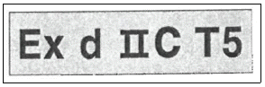
- 내압방폭구조, 최고표면온도의 허용치가 100℃ 이하의 것
- 내압방폭구조, 최고표면온도의 허용치가 200℃ 이하의 것
- 압력방폭구조, 최고표면온도의 허용치가 100℃ 이하의 것
- 압력방폭구조, 최고표면온도의 허용치가 200℃ 이하의 것
(정답률: 알수없음)
106. ( ) 안에 들어갈 말로 옳은 것은?
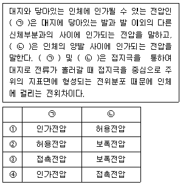
- ①
- ②
- ③
- ④
(정답률: 알수없음)
107. ＜보기＞는 「산업안전보건기준에 관한 규칙」에서 규정하는 감전 위험 방지를 위한 접지사항이다. ( ) 안에 들어갈 숫자로 옳은 것은?
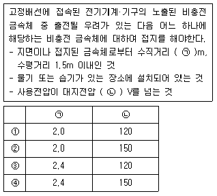
- ①
- ②
- ③
- ④
(정답률: 알수없음)
108. 정전기 발생에 영향을 주는 요인을 ＜보기＞에서 모두 고른 것은?
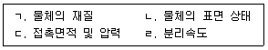
- ㄱ, ㄴ
- ㄷ, ㄹ
- ㄱ, ㄴ, ㄷ
- ㄱ, ㄴ, ㄷ, ㄹ
(정답률: 알수없음)
109. 건물 내 화재 발생 시 재실자의 피난 안전성 확보 방안으로 옳지 않은 것은?
- 피난경로는 단순명료하게 구성한다.
- 피난 시 패닉현상을 방지하기 위해 중앙코어식(CO형)으로 피난로를 설계한다.
- 상용의 직동계단보다는 피난계단 또는 특별피난계단을 활용하여 피난한다.
- 피난자가 패닉에 빠진 경우에도 피난할 수 있도록 풀 프루프(Fool Proof)의 원칙으로 대책을 마련한다.
(정답률: 알수없음)
110. 「위험물안전관리법 시행령」에서 규정하는 위험물의 품명과 지정수량의 연결이 옳은 것을 ＜보기＞에서 모두 고른 것은?
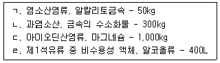
- ㄱ, ㄴ
- ㄱ, ㄷ
- ㄴ, ㄹ
- ㄷ, ㄹ
(정답률: 알수없음)
111. ＜보기＞는 「산업안전보건기준에 관한 규칙」에서 규정하는 충전전로에 대한 접근 한계거리의 내용이다. ( ) 안에 들어갈 숫자로 옳은 것은?
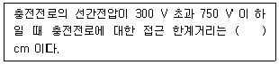
- 10
- 15
- 20
- 30
(정답률: 알수없음)
112. 화재 시 발생하는 연소가스의 종류별 특성에 관한 설명으로 옳은 것은?
- 일산화탄소는 가연물의 불완전연소를 발생하는 무색, 무취의 유독성 기체이며, 비가연성 물질이다.
- 염화수소는 폴리염화비닐과 같은 염소가 함유된 물질이 탈 때 생성되는 무색 기체로 금속에 대한 부식성이 있다.
- 황화수소는 썩은 달걀 냄새가 나는 비수용성 무색 기체로 황을 포함한 무기화합물의 불완전연소로 발생하며, 독성이 강하다.
- 암모니아는 질소 함유물이 연소할 때 발생하며, 독성은 없으나 강한 자극성을 가지는 무색의 기체로 냉동시설의 냉매로 많이 쓰인다.
(정답률: 알수없음)
113. 인체저항에 관한 설명으로 옳지 않은 것은?
- 인체저항은 피부저항과 내부조직 저항의 합으로 구성된다.
- 피부저항은 전압, 접촉면적, 접촉압력, 습도에 영향을 받는다.
- 전압의 인가시간이 길어지면 온도가 상승하고 인체저항이 증가한다.
- 내부조직 저항은 주파수에 영향을 받지 않고 거의 일정하다.
(정답률: 알수없음)
114. 소화약제에 관한 설명으로 옳지 않은 것은?
- 할론소화약제의 주된 소화효과는 부촉매효과이다.
- 분말소화약제 중 일반화재에 소화 적응성이 있는 것은 제3종이다.
- 할로겐화합물 및 불활성기체 소화약제는 제5류 위험물 저장 장소에 사용할 수 있다.
- 강화액소화약제는 물에 탄산칼륨 등을 첨가한 것으로 응고점은 –20℃ 이하이다.
(정답률: 알수없음)
115. 「위험물안전관리법 시행령」에서 규정하는 위험물의 유별, 성질, 품명의 연결이 옳은 것은?
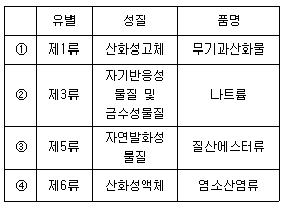
- ①
- ②
- ③
- ④
(정답률: 알수없음)
116. ( ) 안에 들어갈 말로 옳은 것은?
- 코로나 방전
- 스트리머 방전
- 불꽃 방전
- 연면 방전
(정답률: 알수없음)
117. 액체의 연소 형태가 아닌 것은?
- 증발연소
- 표면연소
- 분해연소
- 분무연소
(정답률: 알수없음)
118. 연소점에 관한 설명으로 옳은 것은?
- 점화원을 제거해도 지속적인 연쇄반응으로 연소가 되는 최저온도이다.
- 가연성 혼합기체가 착화원에 의해 발화가 일어날 수 있는 가연성 액체의 최저온도이다.
- 외부의 직접적인 점화원 없이 가열된 열의 축적에 의하여 발화가 되고 연소가 되는 최저온도이다.
- 가연물이 공기 중의 산소 또는 산화제와 반응하여 열과 빛을 발생하면서 산화하는 현상이다.
(정답률: 알수없음)
119. 연구실에서 칼륨으로 인한 화재가 발생한 경우 적응성 있는 소화약제는?
- 이산화탄소소화약제
- 인산염류소화약제
- 할론소화약제
- 팽창진주암
(정답률: 알수없음)
120. 「위험물안전관리법 시행령」에서는 위험물 및 지정수량을 규정하고 있다. ＜보기＞의 물질이 해당하는 분류로 옳은 것은?
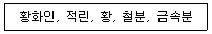
- 제1류 위험물
- 제2류 위험물
- 제3류 위험물
- 제5류 위험물
(정답률: 알수없음)
7과목: 보건ㆍ위생 및 인간공학적 안전관리
121. 환기장치 관련 용어에 관한 옳은 설명을 ＜보기＞에서 모두 고른 것은?
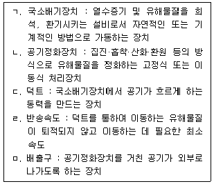
- ㄱ, ㄴ
- ㄱ, ㅁ
- ㄴ, ㄷ, ㄹ
- ㄴ, ㄹ, ㅁ
(정답률: 알수없음)
122. 유해물질의 발생원을 포위하지 않고 발생원 가까운 위치에 설치하는 후드의 종류는?
- 그리드형
- 건축부스형
- 장갑부착상자형
- 드래프트 챔버형
(정답률: 알수없음)
123. 국소배기장치의 덕트 설치 방법으로 옳지 않은 것은?
- 덕트의 접합부 안쪽은 돌출된 부분이 없도록 한다.
- 덕트는 가능한 길이를 깊게 설치하고 주름관(플렉시블) 덕트는 피해야 한다.
- 덕트는 최소 반송속도를 만족하고 압력손실이 적게 발행하는 형태로 설치한다.
- 덕트끼리 접합 시 비스듬하게 접합하는 것이 직각으로 접합하는 것보다 압력손실이 적다.
(정답률: 알수없음)
124. 전체환기의 종류별 특징에 관한 설명으로 옳은 것은?
- 자연환기는 환기량 예측 자료를 구하기 쉽다.
- 자연환기는 강제환기에 비해 소음 발생이 크다.
- 강제환기는 자연환기에 비해 설치비 및 유지보수비가 적다.
- 강제환기는 환기량을 기계적으로 결정하므로 예측이 가능하다.
(정답률: 알수없음)
125. 「산업안전보건법」에서 규정하는 안전·보건표지의 색채와 사용사례의 연결이 옳지 않은 것은?
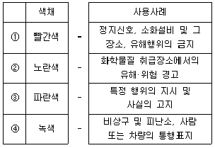
- ①
- ②
- ③
- ④
(정답률: 알수없음)
126. 「연구실 설치운영에 관한 기준」에서 규정하는 연구실 위험도에 따른 안전설비 설치·운영기준으로 옳지 않은 것은?
- 저위험연구실의 화재감지기 및 경보장치설치는 필수사항이다.
- 저위험연구실의 콘센트, 전선의 허용전류 이내 사용은 필수적이다.
- 중위험연구실의 고전압장비 단독회로 구성은 필수사항이다.
- 중위험연구실의 주기적인 환기설비 작동상태점검은 필수사항이다.
(정답률: 알수없음)
127. 호흡용 보호구의 밀착도 검사에 관한 설명으로 옳지 않은 것은?
- 밀착도 검사는 2년마다 1회 실시한다.
- 정량적 밀착도 검사는 오염물질의 누설 정도를 양적으로 확인하기 위한 검사이다.
- 밀착도 검사는 착용자의 얼굴에 호흡용 보호구가 효과적으로 밀착되는지 확인하기 위한 검사를 말한다.
- 정성적 밀착도 검사는 사람의 오감을 이용하여 호흡용 보호구 내부로 오염물질의 침투여부를 판단하는 방법이다.
(정답률: 알수없음)
128. 연구활동종사자가 화학물질을 취급할 때 사용하는 개인보호구의 착용 순서로 옳은 것은?
- 실험장갑→고글→호흡용 보호구→실험복
- 실험복→호흡용 보호구→고글→실험장갑
- 호흡용 보호구→실험장갑→실험복→고글
- 고글→호흡용 보호구→실험장갑→실험복
(정답률: 알수없음)
129. 석면 취급장소에서 착용하여야 하는 호흡용 보호구의 등급으로 옳은 것은?
- 특급
- 1급
- 2급
- 3급
(정답률: 알수없음)
130. 방독마스크 사용 시 주의사항으로 옳지 않은 것은?
- 산소결핍 위험이 있는 연구실에서 사용한다.
- 정화통은 사용자가 쉽게 이용할 수 있는 곳에 보관한다.
- 마스크 착용 중 가스 냄새가 난다고 느낄 때는 즉시 사용을 중지한다.
- 정화통의 종류에 따라 사용한도시간(파과 시간)이 있으므로 마스크 사용 시간을 기록한다.
(정답률: 알수없음)
131. ＜보기＞에서 설명하는 개념으로 옳은 것은?
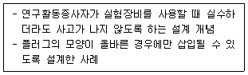
- 양립성(Compatibility)
- 페일 세이프(Fail Safe)
- 풀 프루프(Fool Proof)
- 행동유도성(Affordance)
(정답률: 알수없음)
132. <그림 1>과 같이 수행해야 할 작업을 <그림 2>와 같이 부정확하게 수행하는 휴먼에러의 유형은?
- 작위에러(Commission Error)
- 생략에러(Omission Error)
- 순서에러(Sequence Error)
- 시간에러(Time Error)
(정답률: 알수없음)
133. 연구호라동종사자 중 유소견자가 발생한 경우에 연구주체의 장이 실시해야 하는 건강검진으로 옳은 것은?
- 특수건강검진
- 일반건강검진
- 수시건강검진
- 임시건강검진
(정답률: 알수없음)
134. 연구활동종사자에게 노출되는 중금속에 관한 노출평가를 하고자 할 때 사용하는 시료채취 여과지로 옳은 것은?
- 활성탄여과지
- 유리섬유여과지
- PVC(Poly Vinyl Chloride)여과지
- MCE(Mixed Cellulose Ester)여과지
(정답률: 알수없음)
135. 특수건강검진 대상 유해인자와 해당 유해인자를 다루는 연구활동종사자의 배치 후 첫 번째 특수건강검진의 실시 시기의 연결이 옳지 않은 것은?
- ①
- ②
- ③
- ④
(정답률: 알수없음)
136. ( ) 안에 들어갈 말로 옳은 것은?
- 0단계
- 1단계
- 2단계
- 3단계
(정답률: 알수없음)
137. 인체측정치의 설계 응용 원리에 관한 설명으로 옳지 않은 것은?
- 비상문은 최대 집단값을 이용하여 설계한다.
- 조종장치까지의 거리를 정할 때는 최소 집단값을 이용하여 설계한다.
- 조절식 설계의 조절범위는 30~60퍼센타일 까지의 범위를 수용대상으로 한다.
- 극단치를 이용한 설계원칙은 인체측정 특성의 최대치수 또는 최소치수를 기준으로 한 설계이다.
(정답률: 알수없음)
138. 「산업안전보건기준에 관한 규칙」에서 규정하는 근골격계 유해요인조사의 시기에 관한 설명으로 옳은 것은?
- 정기조사는 2년마다 실시해야 한다.
- 수시조사는 1년마다 실시해야 한다.
- 신규 사업장은 1년 이내에 최초 실시해야 한다.
- 근골격계부담작업에 해당하는 새로운 작업·설비를 도입한 경우 1년 이내에 실시해야 한다.
(정답률: 알수없음)
139. 작업환경측정 대상 연구실 중, 작업환경측정 전 실시하는 예비조사의 목적으로 옳지 않은 것은?
- 올바른 시료 채취 전략을 수립하기 위험이다.
- 유사노출그룹(Similar Exposure Group)을 설정하기 위함이다.
- 연구활동종사자의 노출기준 초과 여부를 확인하기 위함이다.
- 연구활동 중 발생할 수 있는 노출 가능성을 파악하기 위함이다.
(정답률: 알수없음)
140. ＜보기＞는 「산업안전보건법 시행규칙」에서 규정하는 작업환경측정의 주기에 대한 설명이다. ( ) 안에 들어갈 말로 옳은 것은?
- 30일
- 60일
- 90일
- 120일
(정답률: 알수없음)